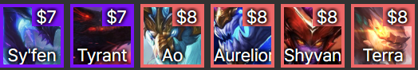

ダークフライト
ダークフライト

アストラルチャンピオンの合計スターレベルは、オーブの品質を向上させます。
アストラルチャンピオンはアビリティパワー(魔法力)のボーナスを獲得します。
(3) 5 魔法力
(3) 30魔法力
(3) 75魔法力
戦闘開始:祭壇に置かれたユニットが犠牲になり、
保有しているアイテム一つのコピーとともに
追加体力をすべての闇降臨チャンピオンに付与します。
象徴や製作不可アイテムはコピーされた
瞬間汚染され、闇降臨の浄水に変わります。
(2) 体力+600
(4) 体力+800
(6) 体力+1000
(8) 体力+1800


ギルドメンバーは2倍の金額を得ます。 プレイ中のギルドメンバーごとに増加!
セジュアニ: +130体力
トゥイッチ: +13%攻撃速度
ジェイス: +5攻撃力と魔法力
バード: 攻撃ごとに+2マナー
ジッピー: +8防御力と魔法抵抗力
シンボル: +4%全ての被害吸血
(1) 100%ギルドボーナス
(2) 110%ギルドボーナス
(3) 120%ギルドボーナス
(4) 130%ギルドボーナス
(5) 140%ギルドボーナス
(6) 150%ギルドボーナス
(7) 165%ギルドボーナス
(8) 180%ギルドボーナス
戦闘ごとに彫刻像周辺で戦闘を始める味方が追加攻撃速度を得て、
2秒ごとに最大体力回復量を得ます。
彫刻像が破壊されると、
彫刻像体力の33%に当たる魔法の被害を周辺の敵に負わせます。
(3) 彫刻像1個、体力回復量+2%、攻撃速度+10%
(5) 彫刻像2個、体力回復量+3%、攻撃速度+25%
(7) 彫刻像3つ、体力回復量+5%、攻撃速度+45%
(9) 彫刻像4個、体力回復量+8%、攻撃速度+88%
 ラグーン
ラグーン
 ミラージュ
ミラージュ


使用回数が累積すると戦利品を与えます。
さらに、ラグーンチャンピオンが魔法力と攻撃速度を得ます。
(3)魔法力+8、攻撃速度+8%
(6)魔法力+30、攻撃速度+30%
(9)魔法力+55%、攻撃速度+55%
(12)魔法力+200、攻撃速度+200%
・電気過負荷: 攻撃を受けたりすると、一定確率で隣接した敵に最大体力の
8%だけの魔法のダメージを与えます。
(2):20%確率
(4):25%確率
(6):33%確率
(8):50%確率
----------------------------------------------------
・大将軍の名誉: 戦闘に勝利すると追加体力と魔法力を獲得します。
勝利するたびにこの効果が10%増加し、最大5回重なります。
(2):体力200及び魔法力20
(4):体力300及び魔法力30
(6):体力450及び魔法力45
(8):体力600及び魔法力60
----------------------------------------------------
・光の先導者の闘志: 戦闘において一度体力が50%の時に素早く回復します。
(2):最大体力の40%程度回復します。
(4):最大体力の65%程度回復します。
(6):最大体力の65%のみ2回回復します。
(8):最大体力の110%程度、2回回復します。
----------------------------------------------------
・決闘家の敏捷性: ミラージュユニットが追加移動速度を得ます。
基本攻撃をするたびに攻撃速度が上がり、最大10回まで重なります。
(2):重畳あたり6%
(4):二重あたり12%
(6):重畳あたり20%
(8):重畳あたり30%
----------------------------------------------------
・処刑者の剣: ミラージュユニットの基本攻撃とスキルは、
一定体力以下の敵にクリティカルダメージを与えます。
追加のクリティカルダメージ量を得ます。
(2):50%体力以下、+20%クリティカルダメージ量
(4):65%体力以下、+30%クリティカルダメージ量
(6):80%体力以下、+40%クリティカルダメージ量
(8):100%体力以下、+50%クリティカルダメージ量
----------------------------------------------------
・魔法剣の魔法付与: 基本攻撃をするたびに魔法力を獲得します。
(2):魔法力5
(4):魔法力8
(6):魔法力12
(8):魔法力20
----------------------------------------------------
海賊の貪欲: プレイヤーが戦闘を終えるたびに戦利品ボックスを獲得します。
(2):甲板員の箱を獲得します。
(4):将校の箱を獲得します。
(6):隊長の箱を獲得します。
(8):提督の箱を獲得します。
----------------------------------------------------
(2) ???(ゲームごとにランダムに決定)
(4) ???(ゲームごとにランダムに決定)
(6) ???(ゲームごとにランダムに決定)
(8) ???(ゲームごとにランダムに決定)
 モノリス
モノリス

ユニットは、18%のダメージ減少効果を獲得します。
Nomsyは自分のシナジーによって以前自分を調教した調教師を戦闘に召喚します。
調教師の魔法力はNomsyの魔法力と同じです。 Nomsyが倒されると、
調教師は100%の追加攻撃速度を得ます。
スキルを使用すると4秒間激怒し攻撃速度が25%増えます。
ただし、その間レイジは獲得できません。
激怒時、以下のステータス値獲得:
(2)攻撃速度+50%及び全てのオムニヴァンプ+15%
(4)攻撃速度+100%及び全てのオムニヴァンプ+30%
(6)攻撃速度+150%及び全てのオムニヴァンプ+50%
(8)攻撃速度+250%及び全てのオムニヴァンプ+75%
味方にドラゴンがない場合、ダメージ量に比例する追加魔法のダメージを与えます。
(2) 15%の魔法ダメージ
(4) 50%の魔法ダメージ
(6) 100%の魔法ダメージ
 テンペスト
テンペスト
アイテムは装備者をベンチに戻すと取り除けます。
(3) 固有アイテム1個
(5) 固有アイテム2個
(7) 固有アイテム4個
(9) チャンピオンの王冠を含む固有アイテム5つ
敵は1.0秒間スタンし、最大体力の一定割合に当たる確定ダメージを受ける。
その後、テンペストチャンピオンは与えるダメージが増加する。
(2) 雷撃ダメージ5%、ユニットのダメージ+10%
(4) 雷撃ダメージ15%、ユニットのダメージ+30%
(6) 雷撃ダメージ25%、ユニットのダメージ+60%
(8) 雷撃ダメージ35%、ユニットのダメージ+120%
 アサシン
アサシン
6秒間防御力と魔法御力が40%低下させます。
小さくなった敵にダメージを与えると、スタック可能なボーナスを獲得します。
(2) 攻撃力と魔法力+1
(4) 攻撃力と魔法力+3
(6) 攻撃力と魔法力+6
スキルのクリティカル判定が付与され、クリティカル率とクリティカルダメージ増加します。
(2) クリティカル率+20%、クリティカルダメージ+10%
(4) クリティカル率+40%、クリティカルダメージ+25%
(6) クリティカル率+75%、クリティカルダメージ+75%
 バード
バード
 ブルーザー
ブルーザー
バードはダンスをする時、ドゥートを出現させます。
集めたドゥートごとに、より高ティアのユニットがショップに
出現する確率が1%ずつ上がります。
(2) 体力180
(4) 体力350
(6) 体力600
(8) 体力1000
 砲手
砲手
 キャバリエ
キャバリエ
(2) 攻撃力150%
(4) 攻撃力250%
(6) 攻撃力450%
キャバリエが防御力と魔法抵抗力を得ます。 戦闘開始および突撃後4秒間、
この数値が200%増加します。
(2) 防御力30、魔法抵抗力30
(3) 防御力45、魔法抵抗力45
(4) 防御力60、魔法抵抗力60
(5) 防御力75、魔法抵抗力75
(6) 防御力110、魔法抵抗力110
 ドラゴン
ドラゴン
 竜術師
竜術師


印の付いた特性を+3にし、
味方のチームのドラゴンの数に応じて追加ボーナスを獲得します。
(1) 追加体力500
(2) 防御力及び魔法抵抗力20
(3) 追加被害10%
(4) チーム定員+1
(5) 攻撃速度10%
英雄の体力と魔法力が竜術師のスターレベルごとに20%ずつ増加します。
(2) 体力+250、魔法力+18
(4) 体力+600、魔法力+30
(6) 体力+800、魔法力+50
(8) 体力+1000、魔法力+70
 イヴォーカー
イヴォーカー
 ガーディアン
ガーディアン
(2) +4マナ
(3) +6マナ
(4) +8マナ
自身または最も近くの味方1体に最大体力の一定割合にあたるシールドを付与します。
このシールドは重畳します。
(2) 最大体力の25%にあたるシールド
(4) 最大体力の40%にあたるシールド
(6) 最大体力の70%にあたるシールド
(8) 最大体力の125%にあたるシールド
 メイジ
メイジ
 ミスティック
ミスティック

(3) 魔法力+80%
(5) 魔法力+110%
(7) 魔法力+140%
(9) 魔法力+170%
(2)魔法防御+40
(3)魔法防御+80
(4)魔法防御+150
(5)魔法防御+300
 シェイプシフター
シェイプシフター
 スペルシーフ
スペルシーフ

(2) 追加体力50%
(4) 追加体力125%
 スターコーラー
スターコーラー
 スイフトショット
スイフトショット
そのスターレベルに応じてプレイヤーの体力を(2/3/75)回復します。
最大体力を超過した回復量は、滴チャンピオン1体にダメージとして与える。
対象との距離1マスごとに攻撃速度が上がります。
(2) 攻撃速度10%
(3) 攻撃速度15%
(4) 攻撃速度25%
(5) 攻撃速度35%
 ウォーリアー
ウォーリアー
(2) +75%ダメージ
(4) +150%ダメージ
(6) +275%ダメージ